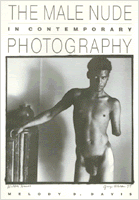

A unique study of the interrelation between social perceptions of the male nude and the medium of photography
A unique study of the interrelation between social perceptions of the male nude and the medium of photography


 A unique study of the interrelation between social perceptions of the male nude and the medium of photography
A unique study of the interrelation between social perceptions of the male nude and the medium of photography

|  |
The Male Nude in Contemporary PhotographyMelody D. Davispaper EAN: 978-1-56639-198-6 (ISBN: 1-56639-198-9) |
"An important contribution to a little understood subject, particularly admirable for the sensible and level-headed way in which it deals the strong taboos which still surround the material. ....it will become an essential book in photographic studies, since the male nude plays an ever increasing role in contemporary subject matter."
—Edward Lucie-Smith
While nude women are a staple of commercial and art photography, the photographed male nude is often the target of censorship but seldom the subject of serious critical discussion. This is the first study to examine the unique interrelation between social perceptions of the nude and the medium of photography. Melody Davis focuses on the work of six artists whose photography confronts societal prohibitions. In order to understand the taboo and silence which surrounds this subject, she addresses the many social and cultural fears that inhibit the presentation and discussion of photographed male nudity. Because she deals with distinctions between the nude and the naked, the interrelational and the pornographic, the book has close connections with current debates about the impact of images and the limits of public tolerance of images of "deviance."
Through the photographs of Robert Mapplethorpe, Lucas Samaras, John Coplans, George Dureau, Joel-Peter Witkin, and a film by Dusan Makavejev, the author examines how the action ideal for the male body is challenged by an artistic medium in which man becomes the spectacle, not the spectator. By presenting three of photography's genres—self-portraiture, portraits of others, and allegorical nudes—Davis is able to reveal the critical and theoretical issues which shape our understanding of photographed nudity, and, by extension, representations of gender.
"Davis makes an important contribution to the new and growing literature on the sexual representation of the male body. This book is a must for anyone interested in gender studies in photography, film, or art history."
—Peter Lehman, author of Running Scared: Masculinity and the Representation of the Male Body
Illustrations
Acknowledgments
Introduction
1. Nude Self-Portraiture: Lucas Samaras and John Coplans
2. The Specularized and Specularizing Other: George Dureau and Robert Mapplethorpe
3. The Allegorical Nude: Joel-Peter Witkin and Dusan Makavejev
Conclusion
Notes
Works Cited
Index
 | Melody D. Davis is an independent writer and photographer who has taught in the Fine Arts Departments of Montclair State College and State University of New York at Stony Brook. |
General Interest
Art and Photography
Visual Studies, edited by Douglas Harper.
Visual Studies, edited by Douglas Harper, will consist of a broad range of books that regard photography, film, and other visual media as vehicles for exploring social and cultural themes. We are developing a series of illustrated books that draw on photographs as primary documents and that include a substantial analytic text; however, we will also consider unillustrated manuscripts on visual subjects. Douglas Harper is a photographer and sociologist who teaches at Potsdam College of the State University of New York.
© 2015 Temple University. All Rights Reserved. This page: http://www.temple.edu/tempress/titles/834_reg.html.